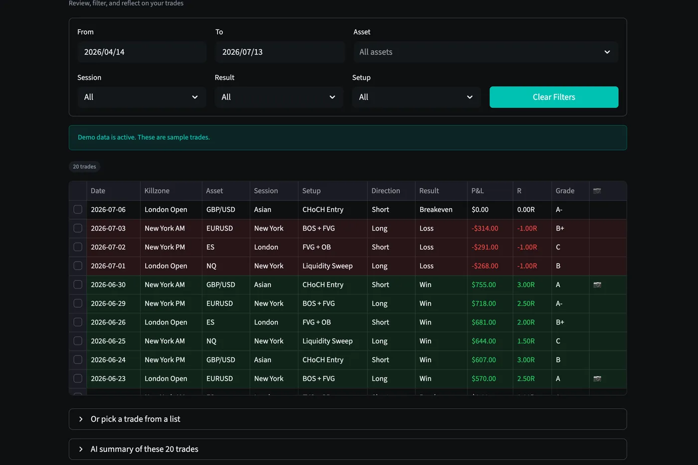
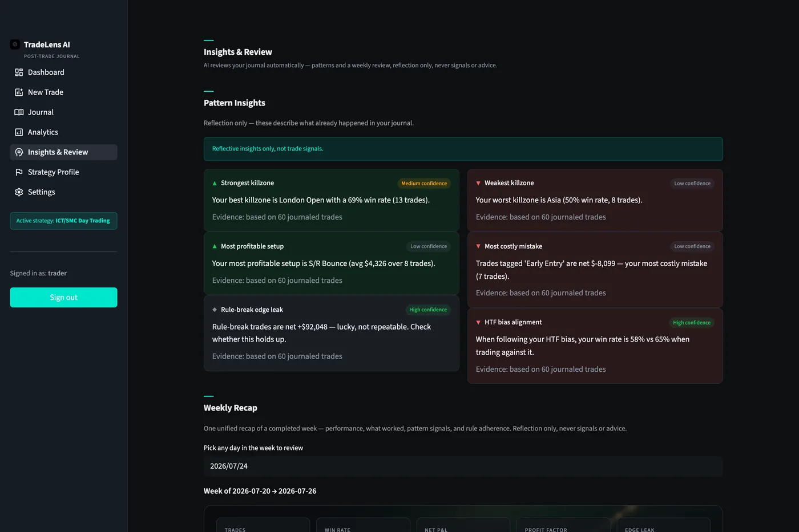
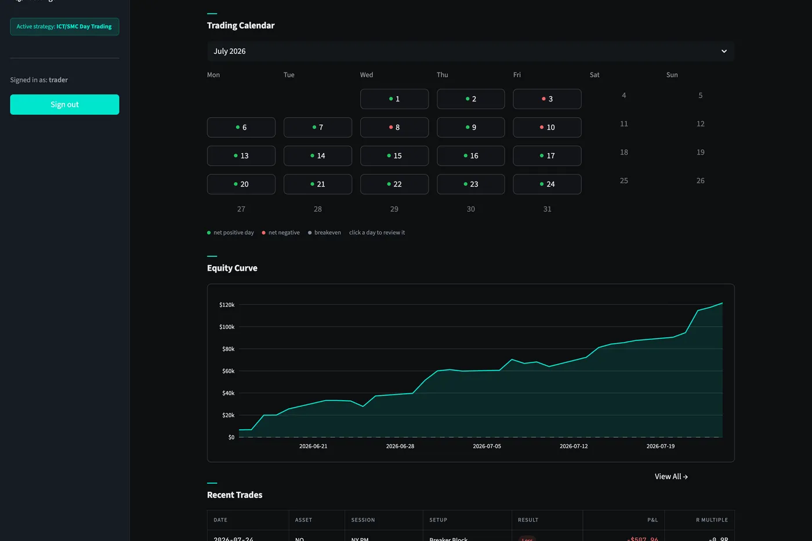

Trade Journal
Filter every trade by date, session, setup, and asset. Your entire history, reviewable in seconds.

Post-Trade Journal. AI-Powered Growth.
TradeLens AI is an AI-powered post-trade journal that analyzes your setups, psychology, and performance — so you can trade better tomorrow.
Built by a trader, for traders.
Features
Six tools, one workflow: log the trade, face the review, learn the pattern. All of it built for SMC/ICT day traders.
Filter every trade by date, session, setup, and asset. Your entire history, reviewable in seconds.

Equity curve, win rate, profit factor, and expectancy across any date range.

Upload your TradingView screenshot. The AI reads it and pre-fills the trade details for you to confirm.

Psychology reflection, emotion log, and mistake tagging: the debrief you'd skip on your own.

Your month at a glance, with every trading day's result one click from its review.

Write down your setup rules once (entries, stops, killzones) and every AI review is graded against how you actually trade, not generic advice.